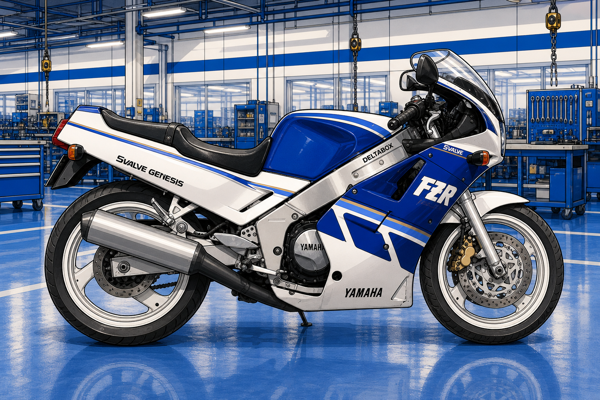

+
次の技術テーマ
新しい特許調査テーマを追加するための枠です。
技術テーマライブラリ
このトップページは技術テーマを選択する入口です。各テーマページでは、収集した特許、技術要約、請求項ツリー、関連部位、適用候補を整理して表示します。
調査・可視化済みのテーマを選択してください。

Google Patentsから収集したYamaha関連特許を、代表的な車両画像上の関連部位へマッピングした技術テーマです。
新しい特許調査テーマを追加するための枠です。
報告書、比較表、動画資料などをテーマ別に整理する予定です。